Eu crio websites e resolvo problemas.
Sou um futuro desenvolvedor manauara, aprimorando minhas habilidades no front e no back-end em busca do meu primeiro emprego na área.
Projetos em Destaque
-
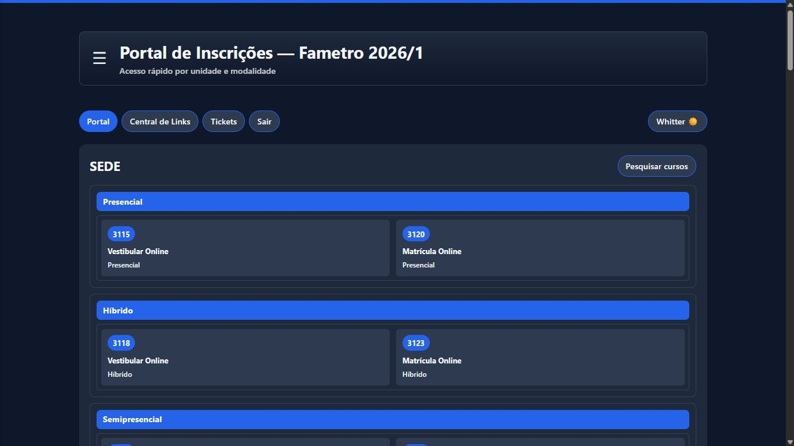
Portal de InscriçõesPlataforma interna da Fametro: centraliza links de vestibulares, matrículas e tickets em tempo real.
-
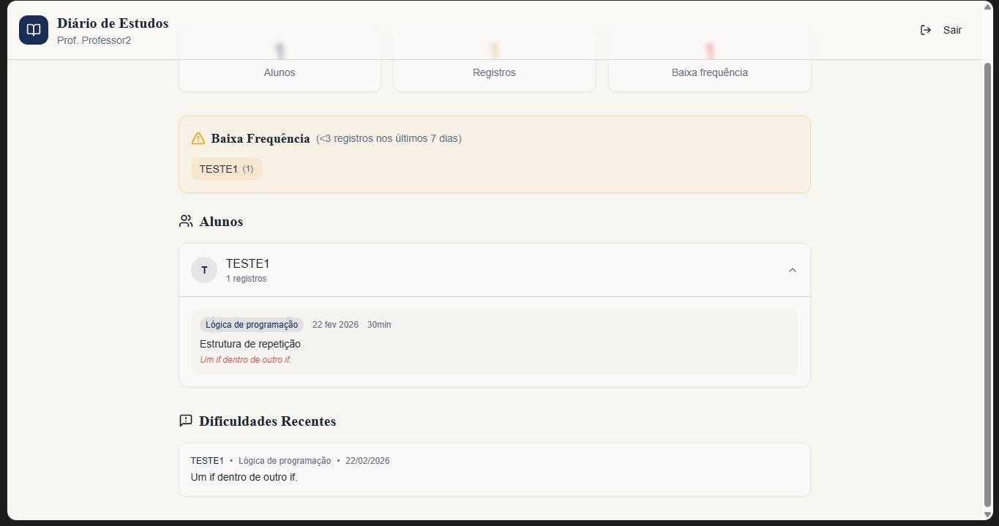
StudyBuddyPlataforma acadêmica que conecta alunos e professores para resolução de dúvidas.
Projetos
Portal de Inscrições
Plataforma para centralizar links de vestibulares e matrículas da Fametro, com sistema de tickets em tempo real.
Ver detalhesStudyBuddy
Plataforma acadêmica que conecta alunos e professores para resolução de dúvidas de forma rápida.
Ver detalhesPortal de Inscrições
Desenvolvida para o call center da Fametro, esta plataforma centraliza links de vestibulares, matrículas e preços — eliminando a necessidade de abrir dezenas de planilhas diferentes.
Tela inicial do sistema. Organiza links por unidade (Sede, Altamira, etc.) e modalidade (Presencial, Híbrido, Semipresencial, EAD). Os cards exibem o número de protocolo e abrem o link correto ao clicar.
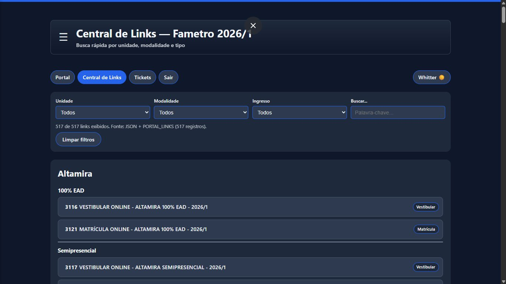
Busca avançada com 517+ links cadastrados. Filtra por unidade, modalidade e tipo de ingresso, com campo de busca por palavra-chave. Cada resultado exibe badge de Vestibular ou Matrícula.
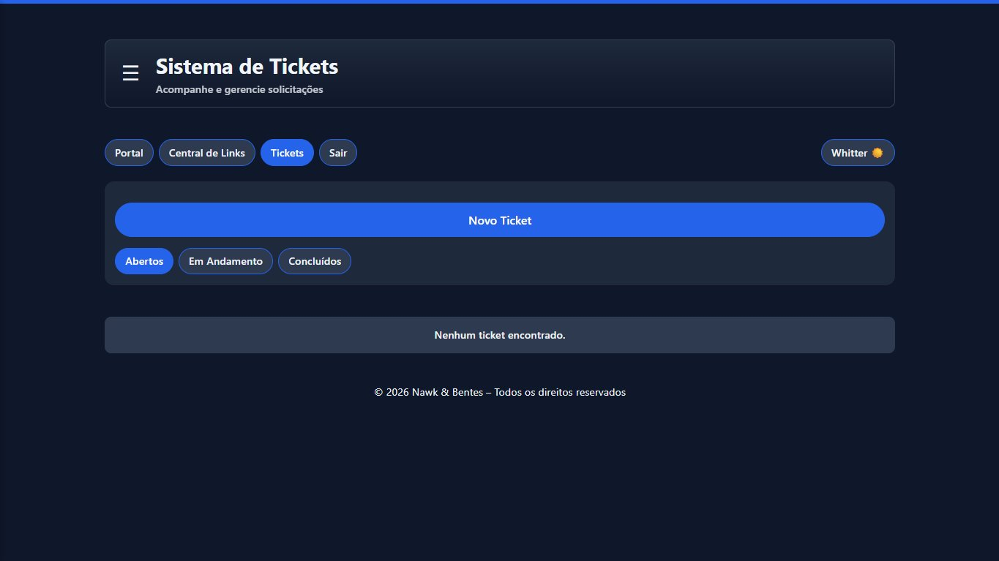
Painel de chamados internos com filtros por status: Abertos, Em Andamento e Concluídos. Atendentes acompanham e atualizam tickets em tempo real, sem depender de planilhas.
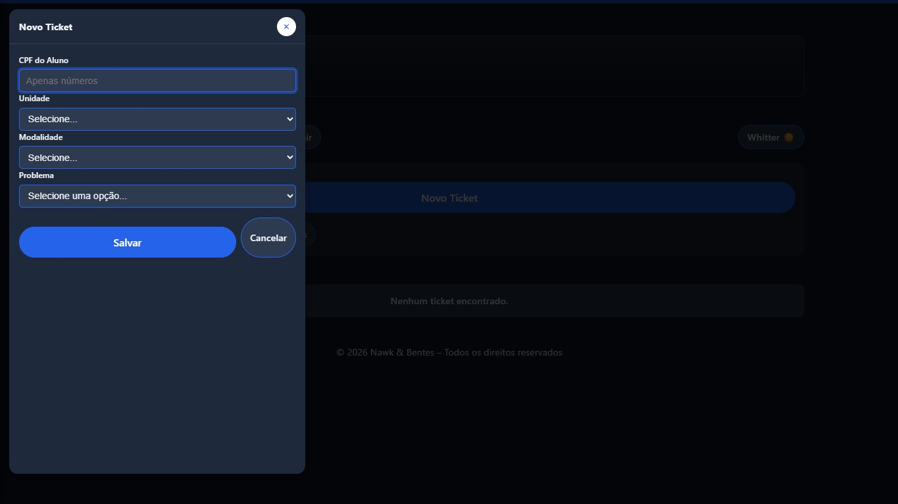
Formulário com CPF do aluno, unidade, modalidade e tipo de problema. O ticket é criado com ID único e atribuído automaticamente ao responsável da área.
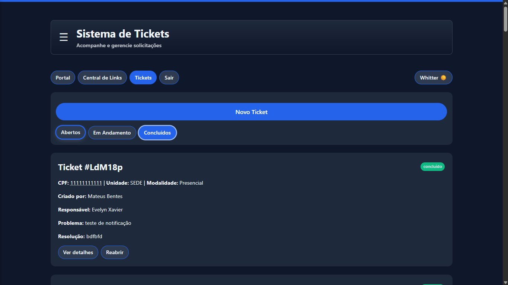
Chamado finalizado com histórico completo: quem criou, quem resolveu, problema relatado e resolução aplicada. Pode ser reaberto se o problema persistir.
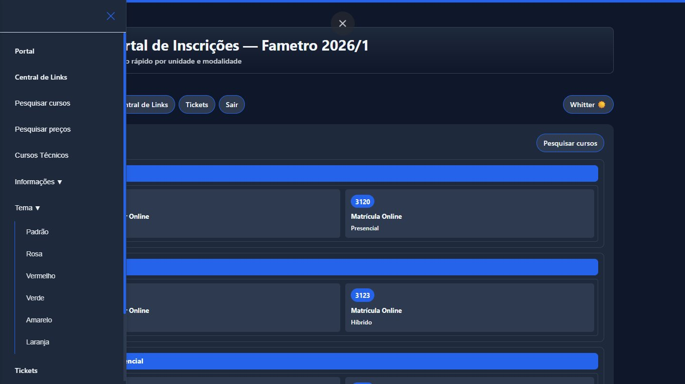
Menu deslizante com acesso rápido a todas as seções. Inclui seletor de temas (Padrão, Rosa, Vermelho, Verde, Amarelo, Laranja) para personalização da interface.
StudyBuddy
Plataforma para facilitar a comunicação entre alunos e professores em projetos acadêmicos. O aluno registra o conteúdo estudado, o tempo dedicado e suas dificuldades — o professor acompanha tudo em tempo real e identifica quem precisa de apoio.
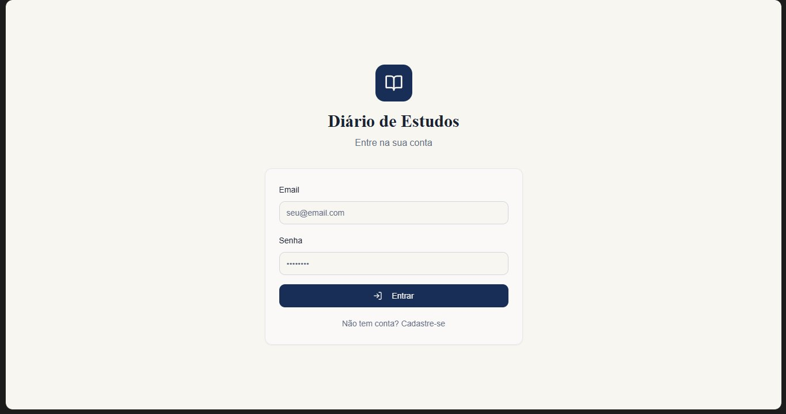
Porta de entrada do sistema. O usuário informa seu e-mail e senha para acessar o painel correspondente ao seu perfil — Estudante ou Professor. Quem ainda não tem conta pode se cadastrar diretamente nessa tela.
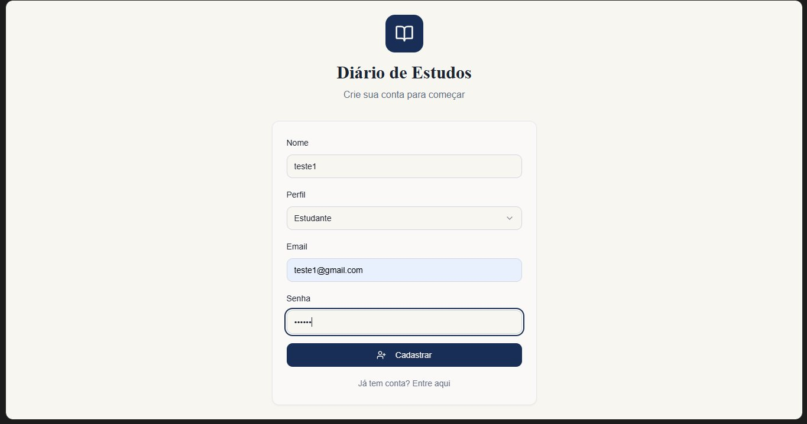
Formulário de criação de conta para alunos. Preenche nome, seleciona o perfil Estudante, informa e-mail e cria uma senha. Após o cadastro, é redirecionado ao próprio painel com histórico de registros.
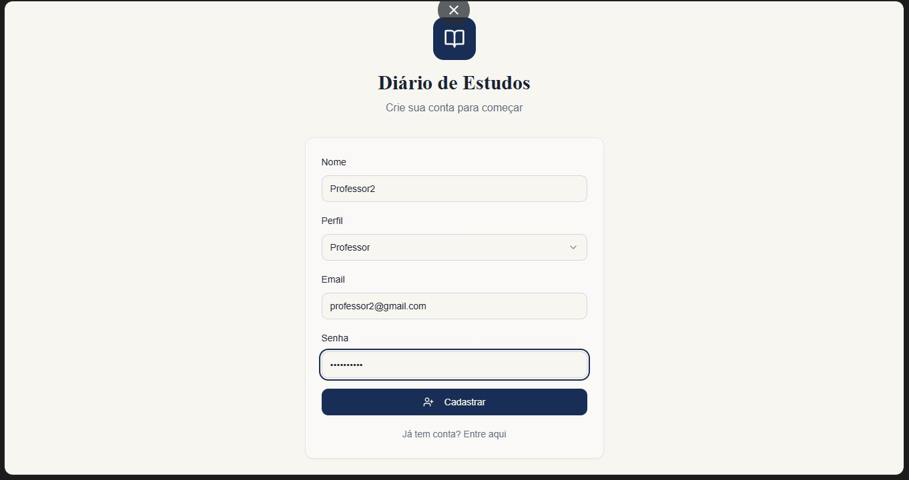
Mesmo formulário de cadastro, mas com o perfil Professor selecionado. Professores têm acesso a um painel diferente: visualizam todos os alunos, seus registros e dificuldades recentes.
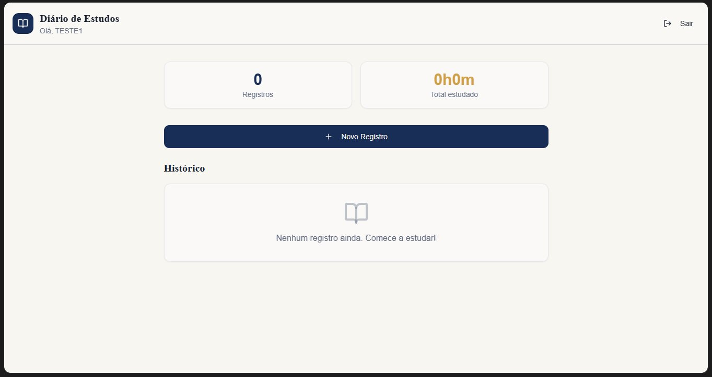
Tela inicial do estudante após o login. Exibe o total de registros feitos e o tempo total estudado. Com a conta recém-criada, os contadores aparecem zerados. O botão Novo Registro inicia o diário de estudos.
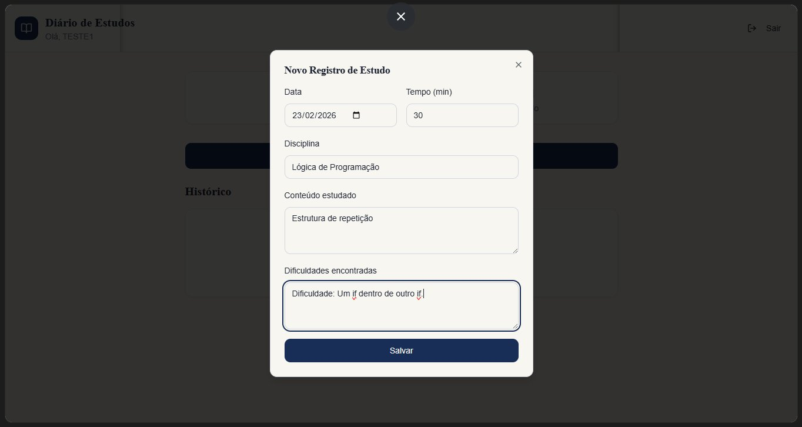
Modal para registrar uma sessão de estudo. O aluno informa a data, o tempo em minutos, a disciplina, o conteúdo estudado e as dificuldades encontradas. Esses dados ficam visíveis para o professor responsável.
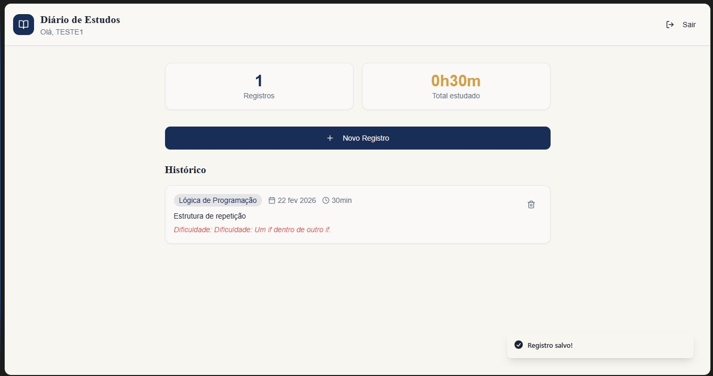
Após salvar, o registro aparece no histórico com a disciplina, data, tempo e conteúdo. Dificuldades aparecem em destaque em vermelho. Os contadores de registros e tempo total são atualizados automaticamente. Um toast de confirmação aparece no canto.
Visão geral com total de alunos, registros e alunos com baixa frequência (menos de 3 registros em 7 dias). Lista todos os alunos com seus registros expansíveis e exibe uma seção de Dificuldades Recentes para facilitar o acompanhamento pedagógico.
Olá.
Sou Kauan, desenvolvedor web em formação, natural de Manaus, Brasil. Há quase quatro anos estudo e construo projetos na área, unindo teoria e prática para criar soluções funcionais. Sou técnico em Informática pelo Instituto Federal do Amazonas (IFAM) e atualmente curso o 4º período de Análise e Desenvolvimento de Sistemas.
Formação e habilidades
Durante minha trajetória acadêmica e prática, adquiri conhecimentos em:
- Linguagens e programação: Java, C, JavaScript, HTML, CSS
- Paradigmas e modelagem: Programação Orientada a Objetos (POO), diagramas UML
- Banco de dados: modelagem e SQL
- Processos e qualidade: metodologias ágeis, testes de software, verificação e validação de requisitos
Minha jornada
Como todo começo, enfrentei desafios pessoais que, por vezes, desviaram meu foco da área que tanto almejo. Mas essas dificuldades só fortaleceram minha determinação. Hoje, com mais maturidade e confiança, vejo 2026 como o ano de virada — um período repleto de projetos, aprendizado contínuo e realizações.
Objetivos profissionais
Meu principal objetivo é construir interfaces envolventes, acessíveis e performáticas, e conquistar meu primeiro emprego em tecnologia. Também busco expandir meu conhecimento para o back-end, banco de dados e modelagem de sistemas, tornando-me um profissional cada vez mais completo.
Projetos e metas para 2026
Este ano quero unir o útil ao agradável: desenvolver projetos reais que resolvam problemas concretos e criar projetos que expandam minha lógica e criatividade. Entre as ideias em andamento:
- Um sistema de controle de entrada e saída de veículos para o condomínio onde moro — uma solução prática que atende a uma necessidade real.
- Jogos web que me ajudem a aprimorar raciocínio lógico e, quem sabe, entreter outros devs.
Fora do código
Quando não estou codando, gosto de jogar, ouvir música, praticar datilografia e continuar aprendendo — seja sobre tecnologia ou qualquer assunto que desperte curiosidade.